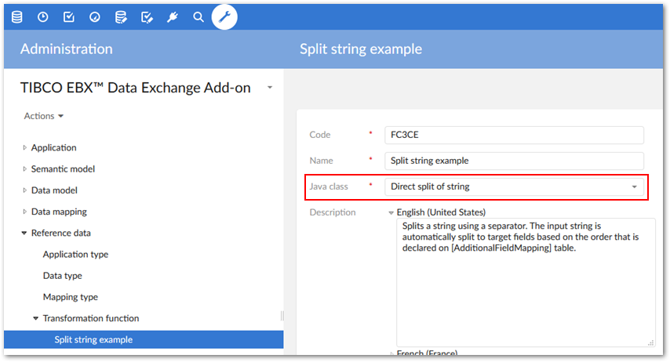
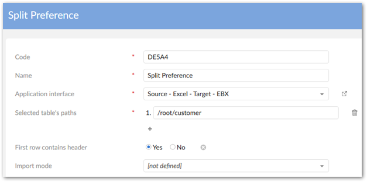
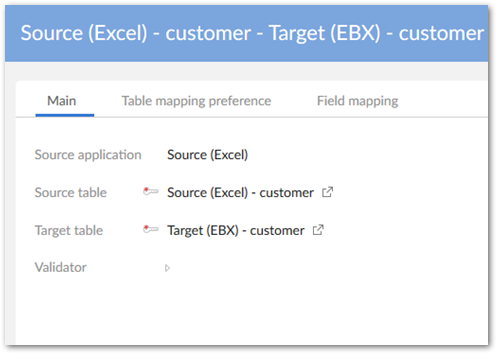
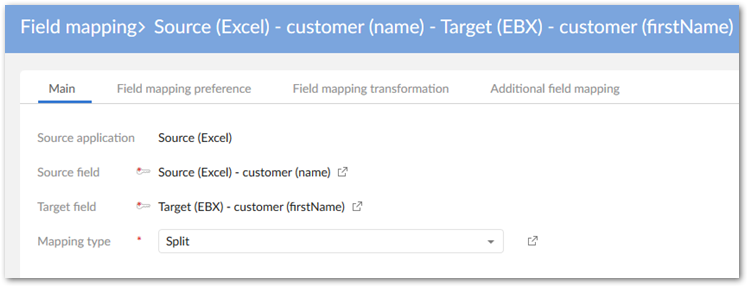
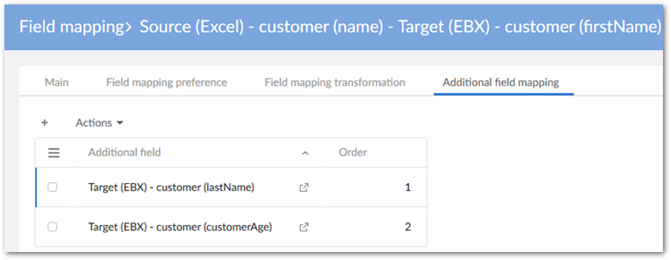
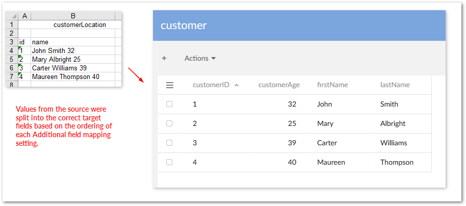
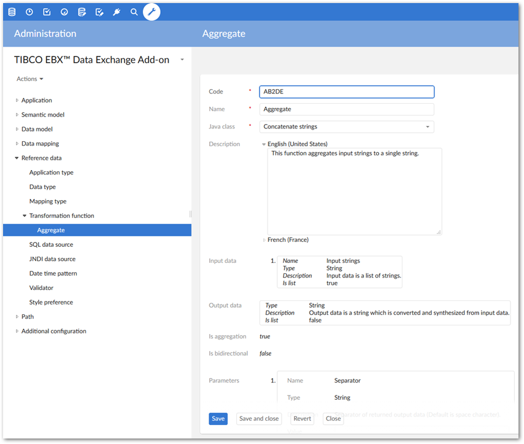
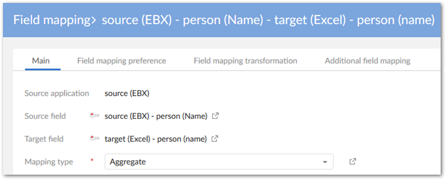
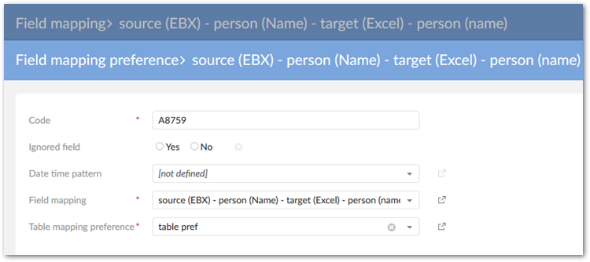
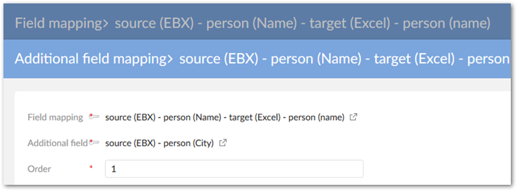

During CSV, Excel, and XML export/import and data transfer, you can use transformation functions to split and aggregate data. The following sections provide basic examples:
Splitting field values during import
Aggregating fields during export
Two split approaches exist:
A direct split for which every single part of the source string field is mapped to a target field.
A specific split for which you can configure how the different parts of the source field are mapped to the target fields.
The next sections highlight some examples of split and aggregation using Excel. Similar principals can be applied to other formats.
The following examples demonstrate splitting field values on import. This example uses the built-in Direct split of string Java class. This class allows you to define one separator as a parameter. You can use the Split of string Java class when more parameters are required.
To automatically split a string value during Excel import:
Create a transformation function that implements the built-in Direct split of string Java class. For this example, we will leave the separator parameter at its default value of ebx:anywhitespace. If required you can alter this parameter to your business needs.

Under Application > Application by type create source and target applications. In this example, the target application is an EBX® table and the source application is an external Excel file.
In the Application by type table, run the Generate models service for both applications.
Create an interface and application interface preference. The interface defines the Excel file as the source and the EBX® table as the target. The preference stores settings for access during the import operation.

Navigate to Data mapping > Table mapping and create the following table mapping and preference:
Table mapping example:

Under the Table mapping preference tab, associate this table mapping with the preference we created earlier. This is done using the Table mapping and Application interface preference properties.
Navigate to Data mapping > Field mapping and create the following field mapping and preference:
Map the name field from the source with the firstName field in the target. Set the Mapping type property to Split.

Use the Field mapping preference tab to create a new preference and associate with the table preference defined earlier.
Create a new record in the Field mapping transformation tab and add the transformation function we previously created.
Use the Additional field mapping tab to associate other fields with this mapped field. In this case the other fields are where the split values will be populated. In our target example, the name field includes [0] first name, [1] last name, and [2] age. Since our main field mapping includes the firstName field in the target, we need to map the other two parts of the string to the correct fields. Additionally, we need to specify the order in which the substrings occur in the source. This is done using the Order property.

The following image shows the result after importing:

The following example shows how to configure the add-on to aggregate fields during export:
This example assumes the following conditions before configuring aggregation specific settings:
Source and target applications exist and are mapped to their corresponding types.
Data models have been generated from the applications. You can create models from scratch, but using the add-ons automatic generation features makes things easier.
An interface between the applications and application interface preference has been created.
Create the transformation function used to aggregate the fields. In this case we use the built in Concatenate strings Java class with the default separator parameter.

Create a table mapping that maps the source and target.
Create a table mapping preference that includes the above mapping.
Create the following field mappings and preferences:
Map the main source and target fields. In the exported file, this mapping provides the first part of the string added to the field.
Set the Mapping type property to Aggregate.

Create a field mapping preference that is associated with the previously created table mapping preference.

In the Field mapping transformation tab, add the transformation function created in the earlier step.
In the Additional field mapping tab, create the mapping for the second field. In the exported file, this source field value will be appended to primary field value.
